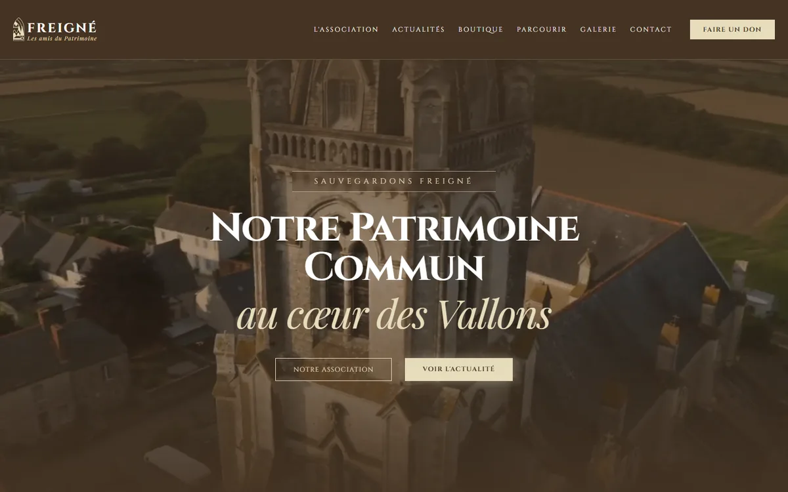
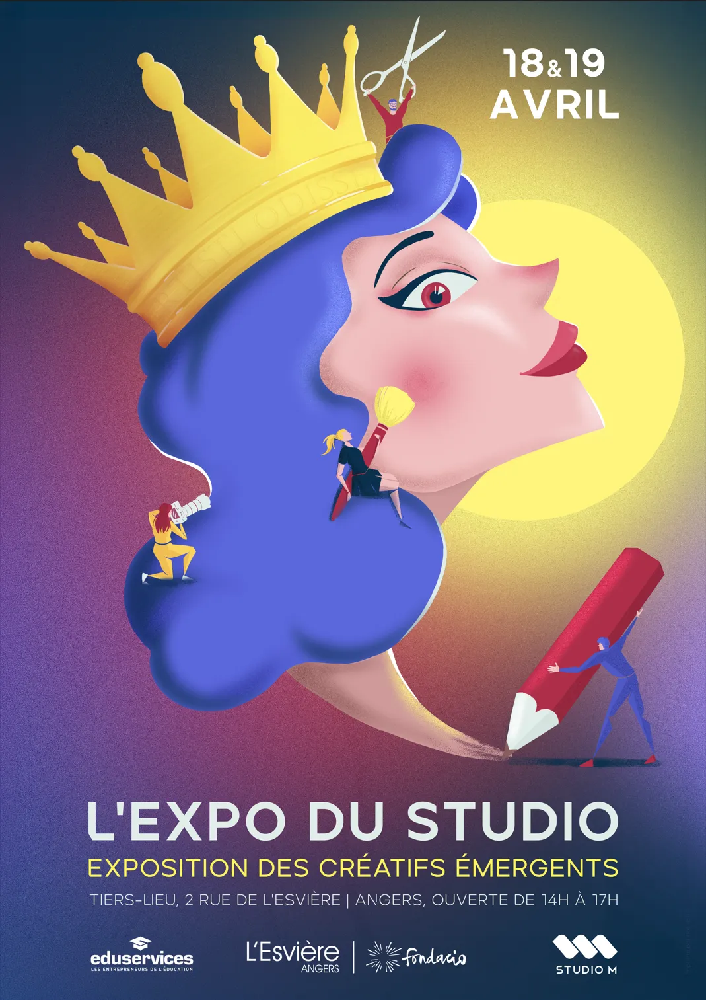

Identité visuelle
Logo, charte graphique, cartes de visite, affiches et signalétique. Une image cohérente partout où l'on vous croise, du flyer à la vitrine.
- Logo et déclinaisons
- Charte graphique
- Supports print : affiches, flyers, plaquettes
Je crée des identités visuelles, des illustrations et des sites web pour les entreprises, les artisans et les associations qui veulent qu'on les remarque, et qu'on se souvienne d'eux.

Ils m'ont confié leur image
Trois savoir-faire, une même exigence : des images pensées pour votre public, livrées prêtes à l'emploi.
Logo, charte graphique, cartes de visite, affiches et signalétique. Une image cohérente partout où l'on vous croise, du flyer à la vitrine.
Encre, aquarelle, crayon ou numérique : des illustrations uniques pour vos affiches, livres, packagings, cadeaux ou réseaux sociaux.
Des sites vitrines rapides, beaux et bien référencés, et les images qui les font vivre : visuels réseaux sociaux, photo, prises de vue par drone.
Vous me parlez de votre projet, de votre public et de vos envies. Ce premier échange est gratuit et sans engagement.
Vous recevez un devis clair, puis mes premières pistes graphiques pour choisir une direction ensemble.
J'ajuste la création avec vos retours, jusqu'à ce qu'elle vous ressemble vraiment.
Vous recevez des fichiers prêts à l'emploi, pour l'impression comme pour le web.
Chaque projet part d'un besoin concret. Voici trois exemples, de la première idée au résultat.

Un site complet pour une association de Vallons-de-l'Erdre : design, développement, textes, photos, audioguide, jeu de piste et boutique en ligne.
Résultat : en première page de Google sur 5 des 6 communes du territoire, trois mois après la mise en ligne.
Voir le site ↗
L'exposition du Studio M : une direction artistique propre à l'événement, déclinée en affiche, vidéo, story, t-shirts et signalétique.
Résultat : une identité complète en trois semaines, et une quarantaine de visiteurs sans aucune publicité préalable.
Voir le projet →Une marque de chaussettes imaginée de A à Z : nom, logo et emballages en carton où les chaussettes deviennent les nageoires de poissons.
Résultat : présenté en exposition, l'emballage est devenu un objet qu'on veut garder, et plusieurs visiteurs étaient prêts à l'acheter.
Voir le projet →« Matheo s'est rapidement démarqué par son excellente capacité d'écoute, sa créativité et sa force de proposition. […] Je recommande vivement Matheo à toute structure recherchant un collaborateur créatif, impliqué, force de proposition et doté d'un excellent esprit d'équipe. »
Je m'appelle Mathéo Gaudin. Graphiste et illustrateur, je travaille sous le nom de Matelot Art depuis 2023, entre Nantes et Angers.
Mon point de départ, c'est le dessin : du croquis au crayon jusqu'à l'illustration numérique, j'aime donner un trait reconnaissable à chaque projet. Je le mets au service de vos besoins concrets : une identité qui inspire confiance, une affiche qui attire du monde, un site qu'on trouve sur Google.
J'accompagne aussi bien les entreprises que les commerces, les artisans et les associations, avec la même attention : écouter d'abord, proposer ensuite.
Décrivez votre besoin en quelques lignes : je vous réponds avec des questions ou une première estimation. Le devis est gratuit.